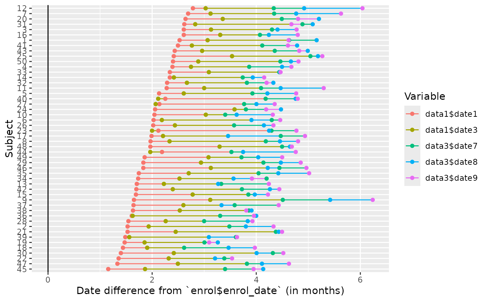
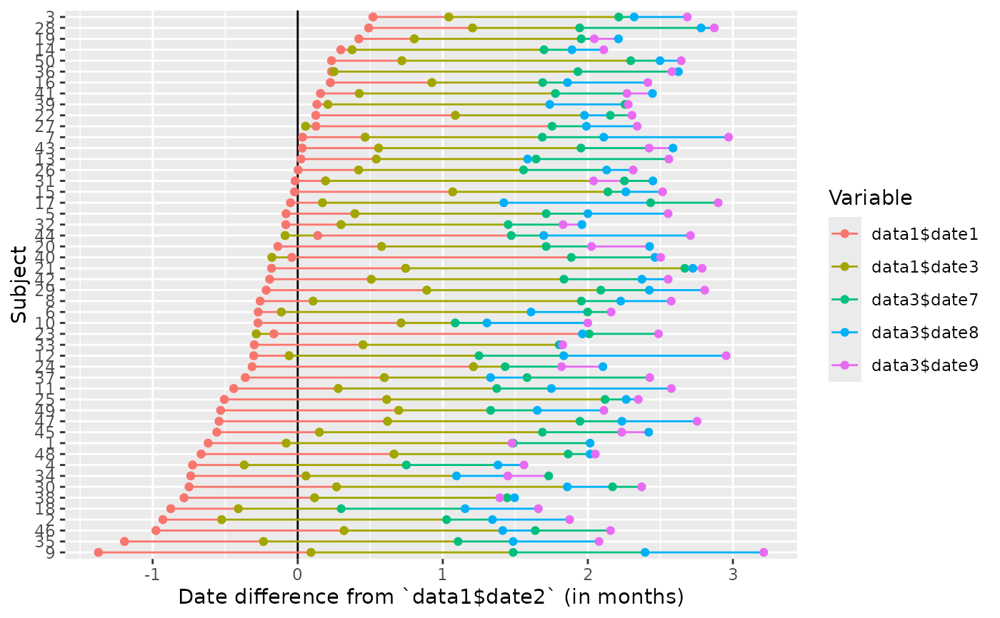
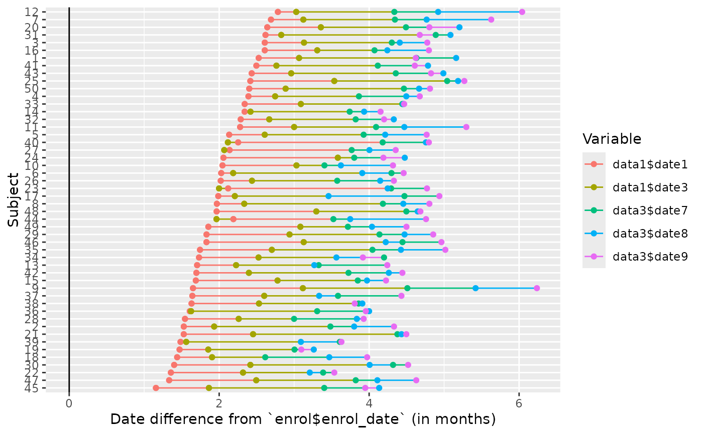
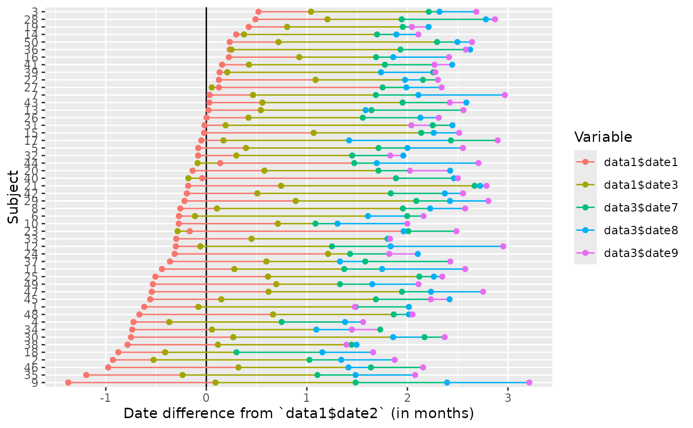

Join all tables on id with only date columns to build a ggplot (or a
plotly if plotly=TRUE) showing all dates for each subject.
This allows outliers to be easily identified.
Usage
edc_swimmerplot(
...,
group = NULL,
origin = NULL,
include = NULL,
exclude = NULL,
id_subset = "all",
id_sort = FALSE,
id_cols = get_subjid_cols(),
time_unit = c("days", "weeks", "months", "years"),
aes_color = c("variable", "label"),
plotly = getOption("edc_plotly", FALSE),
id = "deprecated",
id_lim = "deprecated",
.lookup = "deprecated"
)Arguments
- ...
not used
- group
a grouping variable, given as "dataset$column".
- origin
a variable to consider as time 0, given as "dataset$column".
- include, exclude
a character vector of variables to exclude/include, in the form
dataset$column. Can be a regex (apart from$symbols that will be automatically escaped). Case-insensitive.- id_subset
the subjects to include in the plot.
- id_sort
whether to sort subjects by date (or time).
- id_cols
the subject identifiers columns. Identifiers be coerced as numeric if possible. See get_subjid_cols if needed.
- time_unit
if
origin!=NULL, the unit to measure time. One ofc("days", "weeks", "months", "years").- aes_color
either
variable("{dataset} - {column}") orlabel(the column label).- plotly
whether to use
{plotly}to get an interactive plot.- id
deprecated
- id_lim
deprecated
- .lookup
deprecated
Examples
#db = read_trialmaster("filename.zip", pw="xx")
db = edc_example()
#> Warning: Option "edc_lookup" has been overwritten.
load_database(db)
edc_swimmerplot(id_lim=c(5,45))
 edc_swimmerplot(origin="enrol$enrol_date", time_unit="months",
include=c("data1", "data3"),
exclude=c("DATA1$DATE2", "data3$date\\d\\d"),
id_sort=TRUE)

edc_swimmerplot(group="enrol$arm", id_subset=1:10, aes_color="label")

if (FALSE) { # \dontrun{
p = edc_swimmerplot(plotly=TRUE)
save_plotly(p, "edc_swimmerplot.html")
} # }
edc_swimmerplot(origin="enrol$enrol_date", time_unit="months",
include=c("data1", "data3"),
exclude=c("DATA1$DATE2", "data3$date\\d\\d"),
id_sort=TRUE)

edc_swimmerplot(group="enrol$arm", id_subset=1:10, aes_color="label")

if (FALSE) { # \dontrun{
p = edc_swimmerplot(plotly=TRUE)
save_plotly(p, "edc_swimmerplot.html")
} # }